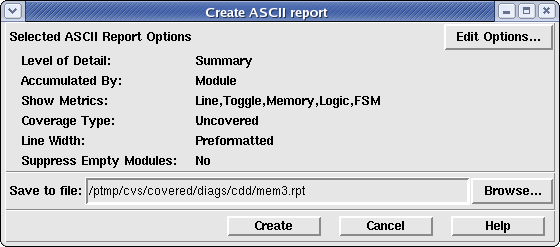

When the File->Generate->ASCII Report menu option is selected, the ASCII Report Generator Window is created to allow the user to view the current report output options, edit those options, and create a name for the report file. Once the report has been generated, this window will automatically close. The resulting report file can be viewed with any text file viewer and is equivalent to a report file generated with a "covered report ..." command-line call. Figure 1 shows an example of this window.
Figure 1. The ASCII Report Generate Window
The "Create ASCII report" window contains three frames which are described below.
The upper portion of the window shows the current options that will be passed to the report generator. These options can be modified in the Preferences window. The window provides a short-cut way to get to the ASCII report option pane in the Preferences window by simply clicking on the "Edit Options..." button in the upper right corner of this window. The various options to the report generator are the following:
This value indicates the amount of information that is output to the report file. The possible values are: 'Summary', 'Detailed' or 'Verbose'. Please see the Covered User's Guide for more information.
This value indicats how the coverage information will be accumulated: on a per module basis or on a per instance basis. The possible values are: 'Module' or 'Instance'. Please see the Covered User's Guide for more information.
This value indicates which coverage metrics will be reported in the ASCII report file. The possible values are: 'Line', 'Toggle', 'Logic', 'FSM', 'Assertion' and/or 'Race Conditions'.
This value indicates whether uncovered or covered coverage cases will be reported to the file. The possible values are: 'Uncovered' or 'Covered'. Please see the Covered User's Guide for more information.
This value indicates whether Verilog code output in the report file will be output in the same manner as is found in the source code or if a user-specified line width (in characters) should be used instead. This option allows the user to make the report file more easily readable. The possible values are 'Preformatted' (to indicate that the line widths should be preserved from the original source code) or 'X characters' where X indicates an integer value greater than 0. Please see the Covered User's Guide for more information.
The middle frame of the ASCII Report window allows the user to specify a filename/location for the generated output file. By default, the report name is the same as the first CDD file loaded, substituting the .cdd extension for a .rpt extension. By default, the directory location to store the generated report is the same directory that the first CDD file exists in. To change this name/location, the user may either enter a value in the entry field or click on the 'Browse...' button to display a "Save As" type window.
The button bar on the bottom of the window contains three buttons. Clicking the 'Create' button will generate a report file using the specified options and filename specified in the upper two frames of this window. After the report has been created, the window will automatically close and the generated file can be viewed with any text viewer. Clicking the 'Cancel' button will not generate a report and will cause the window to close. Clicking the 'Help' button will display this help page.